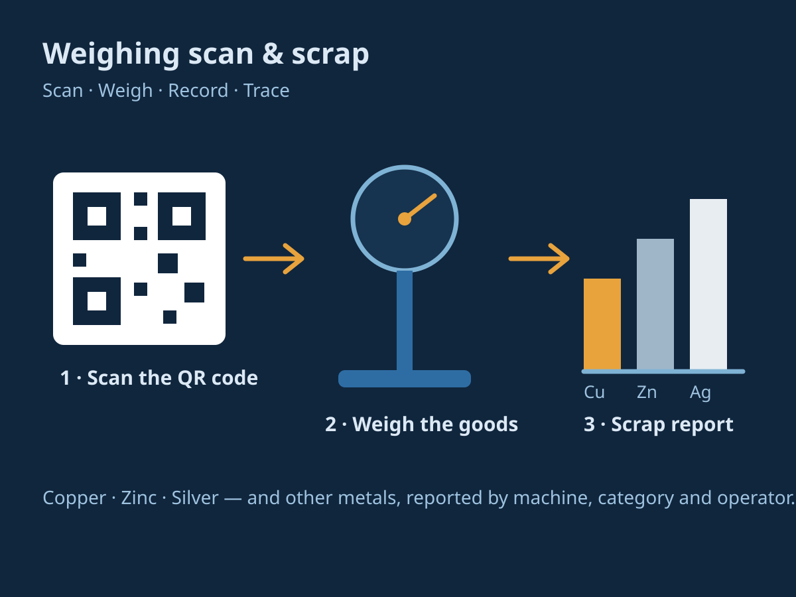

HearS Solutions
From accurate weighing to trusted data: why a modern scale needs hydrostatic hardware and management software
A scale that weighs accurately is only the first layer. Above it sits the layer that records every weighing — and above that, the data a plant is managed by. This article tells the whole three-layer story.

Ask a plant manager what a weighbridge is for and the first answer is a number: the weight. But the questions that follow are the expensive ones. Where did that number go? Who recorded it, and can it be checked? Why does the month-end stock figure never match the scale tickets? A modern weighing installation answers all three questions, because it is built in three layers.
Layer 1: hardware that survives
The bottom layer is the scale itself, and in a harsh environment it is the layer that fails first. Electronic load cells put strain gauges, cables and summing electronics exactly where the damage happens — under the tank, in the pit, beneath the deck — and water, flooding, lightning and corrosion kill them. A hydrostatic load cell has no electronics at the sensing point at all: a sealed cell and fluid lines, with the electronics indoors. That is why HearS builds the weighing story on hydrostatic hardware for harsh environments — a scale that stops weighing records nothing, however good the software above it is.
Layer 2: the digital layer — MES
The second layer records every weighing at the moment it happens. In the HearS solution this is the MES software — E-Tools by CCSS, used in cooperation with CCSS — connected to the scale on the Weighing scan & scrap pattern: scan the QR code on the goods, weigh them, and the result is recorded against the job, the lot and the operator. No paper tickets, no re-typing. The same layer carries the QC module — input control data, quarantine inventory and control-data charts — scrap reports by machine, category and operator, and metal consumption tracking for plants that melt, cast or recycle metal.
Layer 3: data you can manage by
Recorded weighings become the third layer: reports by shift, day and plant; output, stock and scrap figures that reconcile — weigh-in against weigh-out, scale figures against paperwork — and traceability from any number back to the lot and the operator who produced it. Discrepancies surface the same day, while they are still small enough to act on, instead of at month-end.
What the layers change, industry by industry
Scrap and steel first. Scrap weighing is where the digital layer pays fastest: untracked metal and weighing fraud are cash losses, and a QR-coded, recorded weighing closes both. Cement: every truck pass recorded with its delivery contract gives dispatch a per-customer output report by shift end. Mining: mine-gate, stockpile and port figures reconcile, so haul-road losses show up in the report. Animal feed: batch records tie each ingredient weighing to its formula and lot. Oil, gas and LPG: tanker trips are logged by vehicle and net weight, and loading reconciles against delivery trip by trip.
Where to start
Start with the layer that is failing. If cells keep failing, the answer is hardware — hydrostatic, not electronic. If the scale works but the numbers cannot be trusted past the yard, the answer is the digital layer. HearS supplies both, and the quotation states the scope of each layer in writing.
Keep reading
What makes an environment harsh for a scale?
A plain-language definition of harsh and hazardous environments for industrial weighing: washdown, flooding, c…
Read the article: What makes an environment harsh for a scale?Hydrostatic weighing for harsh environments — delivered in Vietnam by HearS
How Emery Winslow Scale Hydrostatic™ load cells (120 and 136 Series LifeMount) answer washdown, flooding, ligh…
Read the article: Hydrostatic weighing for harsh environments — delivered in Vietnam by HearSIndustrial Harsh Environment weighing solutions
The HearS solution hub: definitions, case studies and Hydrostatic™ technology.
Read the article: Industrial Harsh Environment weighing solutions
Need help with this?
Tell us about your application and we will reply by email.